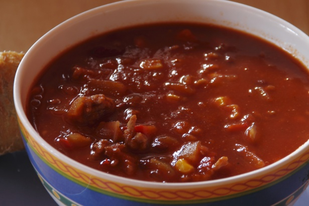

Home

A hearty bowl of beef chili simmered with beans, tomatoes, and bold spices—perfect for cozy nights.
Classic Beef Chili is a robust, one-pot dish that warms you from the inside out. Packed with ground beef, kidney beans, and a mix of smoky spices,
it's a staple for game days, family dinners, or when you just want something hearty and satisfying. This chili develops deep flavor as it simmers,
blending tomatoes, peppers, and spices into a thick, flavorful sauce.It can be served on its own, over rice, or with toppings like sour cream, cheese, and fresh cilantro.
Ingredients
2 tablespoons olive oil
1 large onion, chopped
1 green bell pepper, chopped
3 cloves garlic, minced
1 lb (450 g) ground beef
1 can (800 g) diced tomatoes
1 can (425 g) tomato sauce
2 cans (425 g each) kidney beans, drained and rinsed
2 tablespoons chili powder
1 teaspoon ground cumin
1 teaspoon smoked paprika
1 teaspoon oregano
1/2 teaspoon cayenne pepper (optional)
1 teaspoon salt
1/2 teaspoon black pepper
1 cup beef broth or water
Steps
Cook aromatics: Heat olive oil in a large pot. Add onion, bell pepper, and garlic, and cook until softened.
Brown beef: Add ground beef and cook until browned, breaking up with a spoon.
Add spices: Stir in chili powder, cumin, paprika, oregano, cayenne, salt, and pepper. Cook for 1-2 minutes.
Build the chili: Add diced tomatoes, tomato sauce, kidney beans, and broth. Stir well.
Simmer: Bring to a boil, then reduce heat to low. Cover and simmer for 30-40 minutes, stirring occasionally, until thickened.
Serve: Ladle into bowls and garnish with shredded cheese, sour cream, and fresh cilantro if desired.